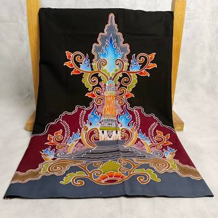
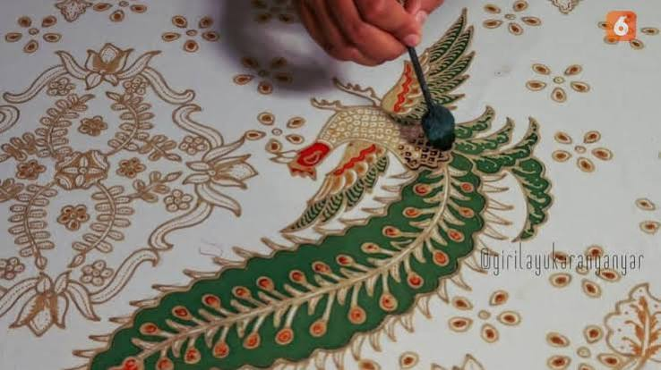

Di sudut-sudut kampung Karanganyar, suara canting yang menari di atas kain mori masih terdengar setiap hari. Sentra batik di wilayah ini, seperti di sekitar Kecamatan Jaten dan Colomadu, menjadi rumah bagi para pengrajin yang telah mewarisi keterampilan membatik dari orang tua dan kakek-nenek mereka.
Filosofi dalam Setiap Motif
Batik Karanganyar memiliki motif khas yang terinspirasi dari alam lereng Gunung Lawu — daun teh, relief candi, hingga kabut pegunungan. Proses pembuatannya melalui tahapan panjang: nyungging (membuat pola), nglowong (mencanting garis utama), hingga nembok dan pewarnaan berulang yang bisa memakan waktu berminggu-minggu untuk satu lembar kain.
"Canting bukan sekadar alat, ia adalah perpanjangan tangan dari hati yang menenangkan jiwa."
Fakta Menarik
- Proses membatik tulis satu kain bisa memakan waktu 2-4 minggu
- Motif khas terinspirasi alam Lawu: daun teh, relief candi, dan kabut gunung
- Diwariskan secara lisan dan praktik langsung dari generasi ke generasi
- Beberapa sentra kini membuka kelas membatik untuk wisatawan


Mengapa Penting?
Batik bukan hanya kain, melainkan identitas. Menjaga sentra batik Karanganyar tetap hidup berarti menjaga mata pencaharian pengrajin sekaligus melestarikan bahasa visual yang merekam filosofi hidup masyarakat lereng Lawu.